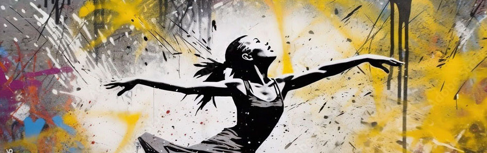
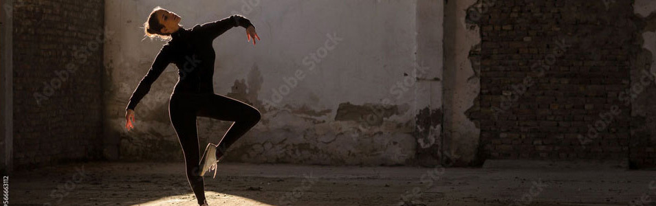

Era uma vez uma adorável e talentosa bailarina chamada Laura Portásio. Ela nasceu em uma pequena cidade no interior de São Paulo, no Brasil. Desde muito jovem, Laura demonstrou uma paixão inegável pela dança. Aos meros três anos de idade, ela já encantava sua família e amigos com seus passos delicados e graciosos.
Laura cresceu em uma família modesta, mas com muito apoio e amor. Seus pais, Talita e Leonardo, perceberam seu talento e determinação, e fizeram tudo o que estava ao seu alcance para ajudá-la a desenvolver suas habilidades. Eles encontraram uma pequena escola de dança em sua cidade natal, onde Laura começou a receber aulas de balé clássico.
Aos poucos, Laura progrediu e começou a se destacar nas competições locais. Seus professores reconheceram seu talento promissor e sugeriram que ela participasse de audições para escolas de balé renomadas na Europa. O sonho de Laura era estudar em uma das melhores escolas de balé do mundo.
Com muito esforço, Laura se preparou para as audições, aprimorando suas técnicas e aprofundando-se na arte do balé. Ela sabia que a estrada seria longa e desafiadora, mas estava determinada a fazer o que amava. Finalmente, chegou o dia das audições, e Laura viajou para várias cidades europeias para mostrar seu talento.
E então, o inacreditável aconteceu: Laura recebeu uma bolsa de estudos de uma prestigiosa escola de balé em Amsterdã, na Holanda. Era a oportunidade que ela tanto esperava, a chance de aprimorar suas habilidades e aprender com os melhores professores e bailarinos do mundo. Seus pais, apesar de tristes em ver sua filha partir, estavam orgulhosos e a apoiavam em sua jornada.
Aos 16 anos, Laura embarcará em uma nova aventura. Ela se mudará para Amsterdã, uma cidade vibrante e cheia de cultura. O choque cultural será significativo, mas Laura está determinada a enfrentar todos os desafios. Ela mergulhou de cabeça nos estudos e na vida de bailarina profissional.
Na escola de balé europeia, Laura conhecerá outros jovens bailarinos talentosos de todo o mundo. Juntos, eles formarão uma comunidade unida e apaixonada pela dança. Laura aprenderá não apenas sobre técnicas aprimoradas de balé, mas também sobre disciplina, perseverança e trabalho em equipe.
Com um coração cheio de gratidão, Laura olha para trás em sua jornada desde o interior de São Paulo até Amsterdã. Ela sabe que tem muito a agradecer a seus pais, avós, tios, professores, amigos e a todos que a apoiaram ao longo do caminho.